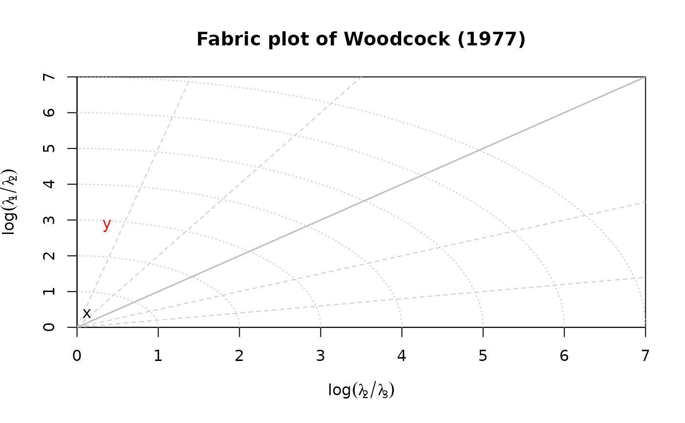

Creates a fabric plot using the eigenvalue method
Usage
woodcock_plot(x, labels = NULL, add = FALSE, max = 7, ...)
Arguments
- x
object of class "Vec3", "Line", "Ray", or "Plane".
- labels
character. text labels
- add
logical. Should data be plotted to an existing plot?
- max
numeric. Maximum value for x and y axes. If NULL, it is calculated from the data.
- ...
optional graphical parameters
Value
A plot and when stored as an object, the orientation tensor's
eigenvalues and eigenvectors as a list.
References
Woodcock, N. H. (1977). Specification of fabric shapes using an eigenvalue method. Geological Society of America Bulletin88, 1231<U+2013>1236. http://pubs.geoscienceworld.org/gsa/gsabulletin/article-pdf/88/9/1231/3418366/i0016-7606-88-9-1231.pdf
Examples
set.seed(20250411)
mu <- Line(120, 50)
x <- rvmf(100, mu = mu, k = 1)
woodcock_plot(x, lab = "x", main = "Fabric plot of Woodcock (1977)")
y <- rvmf(100, mu = mu, k = 20)
woodcock_plot(y, lab = "y", add = TRUE, col = "red")
